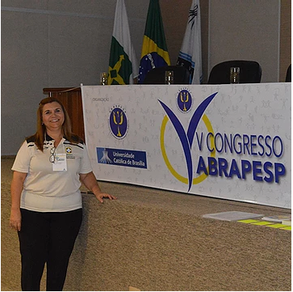
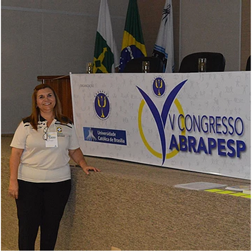
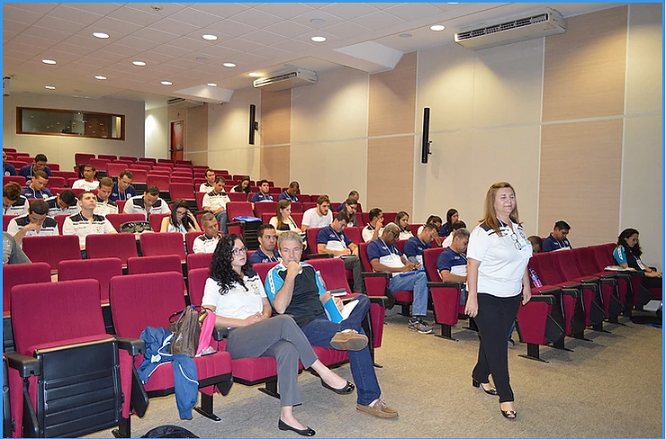

O curso atraiu número maior de participantes que o de vagas disponíveis.

O minicurso de Psicologia do Esporte e Arbitragem ministrado pela Psicóloga Especialista Marta Magalhães, da CBF, foi transferido para o auditório quando ultrapassou o número de vagas disponíveis para as sala. Na plateia, a maioria, foi formada por árbitros do Distrito Federal que, inclusive, inscrição coletiva.
As atenções e tensões vivenciadas por estes profissionais justificam a demanda.
Marta explica o que foi abordado no curso:
“Nós apresentamos a estrutura da arbitragem de futebol pela CBF, pela Comissão Nacional de Árbitros e também pela Escola Nacional de Árbitros de Futebol. Com isto fizemos um treinamento das habilidades psicológicas que eles utilizaram para trabalhar em campo e nos treinamentos. Também foi apresentada uma planilha de treinamento e análise desta planilha: como fazer isto no dia-a-dia para executar melhor as tomadas de decisões”

A avaliação dos presentes foi extremamente positiva, considerando não só a relevância do tema, mas também a forma como foi apresentado. Repetindo a fala de uns dos participantes: “o conteúdo do minicurso nos trará retorno imediato para o nosso dia-a-dia”